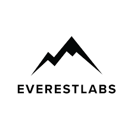
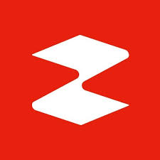
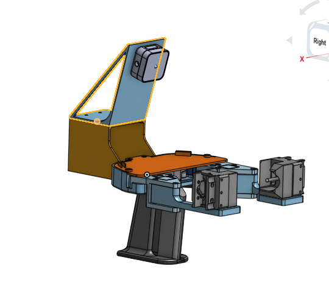
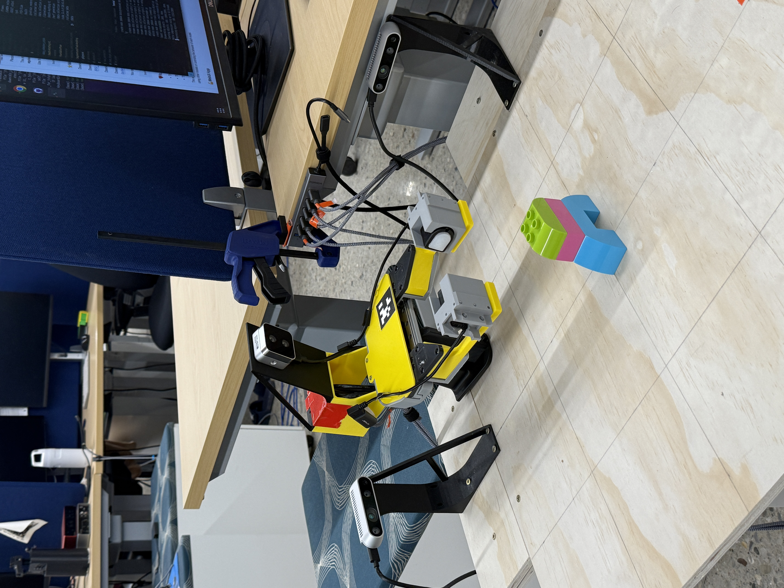
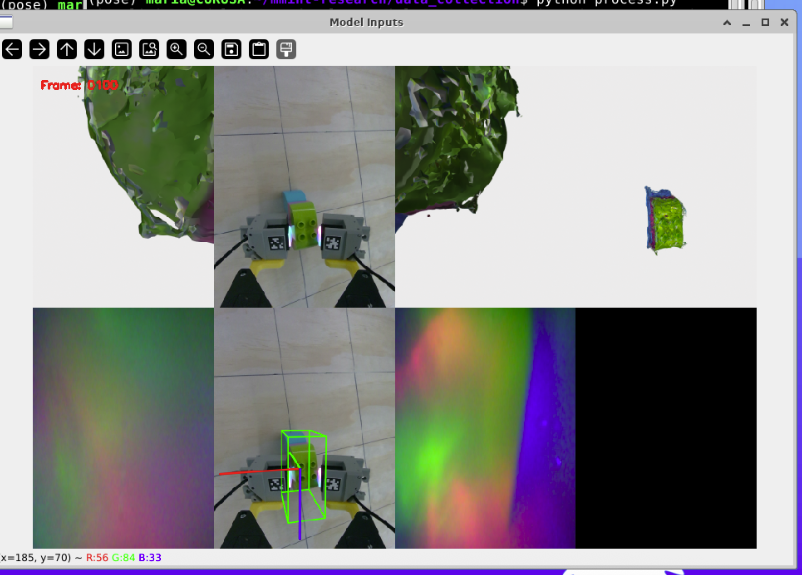

Maria Patni
Robotics Software Engineer
Background
Hi! Thanks for visiting my page.
I just graduated from the University of Michigan with a degree in Computer Science, with experience in robotics, mechanical design, and software engineering. I currently work in the Manipulation and Machine Intelligence (MMINT) Lab under Dr. Nima Fazeli. My broader interests span perception, mechanical design, and ML applications at the intersection of robotics and medicine.
Research Interests
- Model-based planning and control
- ML applications in visiotactile perception
Experience
MMINT Lab (January 2025 - Present)
Currently building a contrastive model to efficiently learn visiotactile representations of rigid and deformable objects.
Viam (May 2024 - August 2024)
I expanded hardware support for processors. My main project was developing a custom pin control library for the RaspberryPi5, supporting features like PWM, GPIO, and pull up/down resistors. I also integrated MIMO capabilities into Viam's control systems package to enhance PID controller performance.
EverestLabs (May 2023 - August 2023)
I improved pick point accuracy for a FANUC robot arm in the context of waste management/sorting. I prototyped six different algorithms for determining optimal contact surfaces and built infrastructure for object height data collection and depth map generation through preliminary testing.
Zipline (May 2022 - August 2022)
I worked on drone serviceability solutions and site integration. I designed and built prototypes for various drone serviceability concepts and ground support equipment. My work led to being listed as an inventor on two patents filed in 2023.
Georgia Tech Biorobotics and Human Modeling Lab (September 2021 - May 2022)

As an undergraduate researcher at BRHML, I worked on two major projects:
- A vascular access cannulation device, collaborating with Emory School of Medicine to improve vein visibility during IV insertion for hypovolemic patients
- The AutoSpine Robot project, where I designed a body-conforming mounting system with 6 degrees of freedom for performing radiofrequency ablation procedures
Zipline (June 2021 - August 2021)
I focused on improving delivery accuracy for drone operations. I created standardized testing procedures for mass testing and package behavior analysis, investigated outlier delivery cases, and identified/implemented mechanicaldesign changes that improved drop accuracy by 30%.
Patents
Issued by Zipline International Inc., June 2023:
- Patent Assignment P308479.US.03 - "DOCKING CONFIGURATIONS FOR AERIAL VEHICLES"
- Patent Assignment P308479.US.04 - "DOCKING CONFIGURATIONS FOR AERIAL VEHICLES"
Research Work
I'm currently working on a contrastive model to efficiently learn visiotactile representations of rigid and deformable objects. Basically what that means is I'm trying to have a model learn the relationship between touch and feel for objects, soft and hard. The ultimate goal is to have a model that knows what an object feels like before a it gets to touch it based on what it's seen/felt before.
I built a gripper (loosely based on the UMI Gripper) that uses DIGIT Sensors & Realsense Cameras to record tactile and vision data as I grasp different objects. I feed this data to a model that will learn these assosciations (hopefully soon, it's a work in progress!). Here's some pictures of the gripper in action collecting data on a lego duplo block:
  Below are my work in progress slides for my research work. They're sloppy right now as I'm in the midst of it, but one I'm done with the project I'll have a refined github page / writeup.
Internship Design Work
Below are some design projects from my MechE internships at Zipline.
Zipline 2022


These are some pictures from my 2022 internship, where I designed initial prototypes for site shipper integration and serviceability solutions for Zipline's P2. At small and medium scale, I designed potential solutions for lowering charging docks and drones down to ground level when broken and later moving them to a servicing van. Once I find my internship slides (lost in the abyss), I'll add them here.
Zipline 2021


These are some random pictures of my package & parachute designs & tests from my 2021 internship, where I worked on Delivery Accuracy. There's a picture of me dropping parachute designs from 80 ft up in the air, and pictures of our monorail tester designed to simulate package / zip dynamics at package deployment.
Check out my internship slides: Zipline 2021
FRC Design Work
Below are my design projects from my high school FRC team (Huskie Robotics, Team 3061). I worked my way up to lead designer and eventually captain.
Huskie Robotics 2021


Since FRC 2021 was essentially cancelled due to COVID, I worked on a few smaller projects. First is a custom gearbox 60% smaller than an OTS gearbox, allowing our team more space within the center of robot for electronics / mechanisms. Second is a drivetrain with custom dual-speed gearboxes. It is a lighter, more efficient swerve drivetrain.
Huskie Robotics 2020


Designed for the FRC 2020 Game: Infinite Recharge. There's a tank style 6 wheel drivetrain base and a climber mechanism designed to latch onto a swinging triangular beam structure. To manipulate the primary scoring component (a dodgeball), there is an intake -> conveyor -> flywheel shooter system to collect, store, and launch them. I designed everything except the climber.
Huskie Robotics 2019


Designed for the FRC 2019 Game: Destination: Deep Space. I designed the entire tank style 6 wheel drivetrain, electrical board layout, and primary scoring component.
Huskie Robotics 2018


Designed for the FRC 2018 Power Up Competition. I was responsible for designing the electrical board layout, climber mechanism (winch based), and a small portion of the drive train.